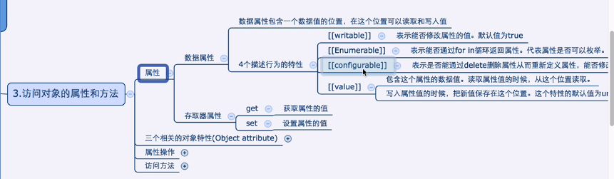
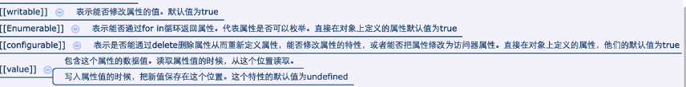

<!DOCTYPE html>
<html lang="en">
<head>
    <meta charset="UTF-8">
    <title>Obj's attribute related feature</title>
</head>
<script type="text/javascript" src="../../DebugUtils.js"></script>
<body>
<script>
    p('');
    p('');
    sep();

    enhance('var o = {x: 1}; 这种方式的o是个创建出来的对象，是没有prototype的 o.prototype.y = 2; 会报y of undefined');
    enhance('需要用构造函数.prototype来定义原型中的属性');
    var o = {x: 1};
    // o.prototype.y = 2; // 报错

    sep();
    function Foo(){}
    Foo.prototype.z = 3;
    obj = new Foo();
    obj.x = 1;
    obj.y = 2;
    obj.user = 'username';
    enhance('propertyIsEnumerable，检测属性是对象自己的且是可枚举的');
    p(obj.propertyIsEnumerable('x')); // true
    p(obj.propertyIsEnumerable('z')); // false
    p(obj.x !== undefined); // true
    enhance('toString是不可被枚举的');
    p(Object.propertyIsEnumerable('toString')); // false
    enhance('返回所有自有属性的名称');
    p(Object.getOwnPropertyNames(obj));
    p(Object.keys(obj));


</script>
</body>
</html>